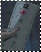

I n f o r m a t i o n /faq.html
Since X is a very complex anime, there are undoubtedly some questions that viewers ask, stuff that they don't understand. The point of this FAQ is to clear up some questions. Note that this is not a site FAQ, it's a series FAQ.
1: What are the charms/talisman that Hinoto use?The charms that Hinoto use are "shiki," shaped like rectangular pieces of papers with markings on them. Sometimes an eye will appear from the upper part. The charms can be used for various purposes such as messangers and attackers.
2: Why did Hinoto try to kill Kamui, follow Tokiko and try to harm Arashi?Hinoto has a darker side, a presence in her that wishes for the world to change, caused by a dark curse brought upon her by the charms (shiki). Therefore, she set out to try and kill Kamui, because his death would result in the destruction of the world. She tried to harm Arashi because she wanted the world to change, and Arashi was one of the Seven Seals who guard the barriers that prevent world destruction.
3: Is Hinoto really evil?Although there is small evidence, Hinoto is not truely evil. The spirit on the charm is different from the real Hinoto. The dark spirit in Hinoto has been overpowering her lately, that's the reason she tried various ways to harm the Seven Seals. You could say that Hinoto is cursed by this dark spirit, and the only way to kill it is to sacrifice herself.
4: Are Sohi and Hien humans?Sohi and Hien were created by Hinoto using shiki. Therefore, they are not human, merely spirits that Hinoto had created to aid her and protect her. They turn back to charms when Hinoto dies.
5: What is Hinoto's true wish?It may seem at first that Hinoto's wish is for Kamui to become a Dragon of Heaven and save the world. Later, she was revealed to have wished for the world to change. Suffering from her inability to change the future, Hinoto had wished for the destruction of the world. The dark spirit that resides in her is a major influence in her dark wish. However, Hinoto's
true wish is to believe in Kamui. She knows she can't change the future, but Kamui may be able to. If she continued to live on, the dark spirit will completely overpower her eventually, and her prediction of the disastrous future will come true. She kills herself in order to leave the future undetermined instead of set to be destroyed. This is how Hinoto plays a rather large part in the outcome of the series.
x
clear x